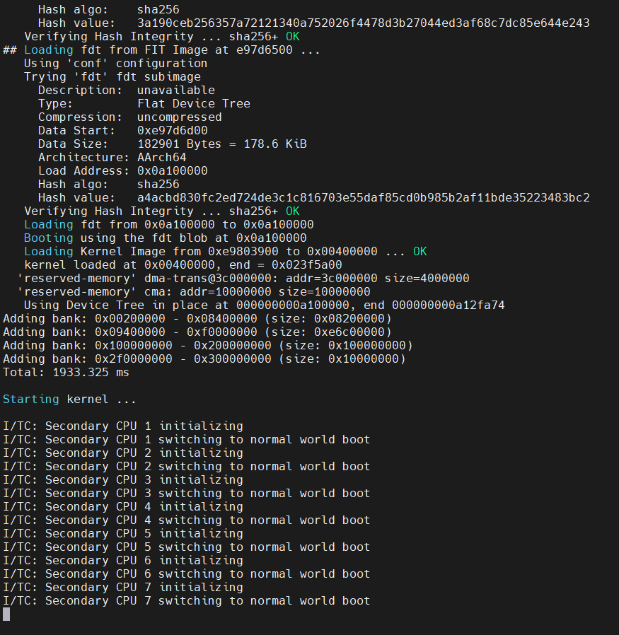
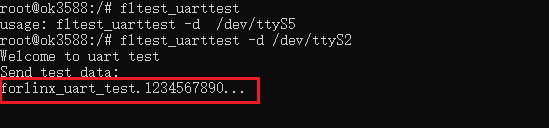
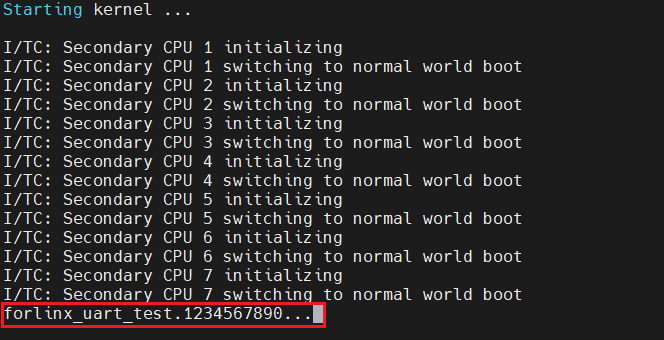

OK3588 5.10.66 Buildroot Debug Serial Port to Normal Serial Port Conversion
Document classification: □ Top secret □ Secret □ Internal information ■ Open
Copyright
The copyright of this manual belongs to Baoding Folinx Embedded Technology Co., Ltd. Without the written permission of our company, no organizations or individuals have the right to copy, distribute, or reproduce any part of this manual in any form, and violators will be held legally responsible.
Forlinx adheres to copyrights of all graphics and texts used in all publications in original or license-free forms.
The drivers and utilities used for the components are subject to the copyrights of the respective manufacturers. The license conditions of the respective manufacturer are to be adhered to. Related license expenses for the operating system and applications should be calculated/declared separately by the related party or its representatives.
This method has been tested and validated on the OK3588-Linux5.10.66 R5 version. Other 3588 platforms can also be verified following this method.
Debug Serial Port to Normal Serial Port Conversion
During project design, it’s common to encounter a shortage of serial ports. In such cases, the debug serial port can be reconfigured as a standard serial port for use.
Note: The method of adding serial ports can be extended through other interfaces, modifying the debugging serial port will cause difficulties in the debugging of subsequent projects. Be careful to use it.
Objective
Change the debug serial port 2 (UART2) to a normal serial port, and the normal serial port functions normally.
Modification Method
diff --git a/arch/arm64/boot/dts/rockchip/OK3588-C-Linux.dts b/arch/arm64/boot/dts/rockchip/OK3588-C-Linux.dts
index 8ea120342..41b134748 100644
--- a/arch/arm64/boot/dts/rockchip/OK3588-C-Linux.dts
+++ b/arch/arm64/boot/dts/rockchip/OK3588-C-Linux.dts
@@ -5,7 +5,7 @@
compatible = "forlinx,ok3588", "rockchip,rk3588";
chosen: chosen {
- bootargs = "earlycon=uart8250,mmio32,0xfeb50000 console=ttyFIQ0 irqchip.gicv3_pseudo_nmi=0 root=PARTUUID=614e0000-0000 rw rootwait";
+ bootargs = "console=null irqchip.gicv3_pseudo_nmi=0 root=PARTUUID=614e0000-0000 rw rootwait";
};
cspmu: cspmu@fd10c000 {
@@ -42,7 +42,7 @@
interrupts = <GIC_SPI 423 IRQ_TYPE_LEVEL_LOW>;
pinctrl-names = "default";
pinctrl-0 = <&uart2m0_xfer>;
- status = "okay";
+ status = "disabled";
};
firmware {
diff --git a/arch/arm64/boot/dts/rockchip/OK3588-C-common.dtsi b/arch/arm64/boot/dts/rockchip/OK3588-C-common.dtsi
index 6dc06d53e..28dd443e9 100644
--- a/arch/arm64/boot/dts/rockchip/OK3588-C-common.dtsi
+++ b/arch/arm64/boot/dts/rockchip/OK3588-C-common.dtsi
@@ -574,6 +574,12 @@
};
};
+&uart2 {
+ pinctrl-names = "default";
+ pinctrl-0 = <&uart2m0_xfer>;
+ status = "okay";
+};
+
&uart4 {
pinctrl-names = "default";
pinctrl-0 = <&uart4m0_xfer>;
~
Verification
Apply the above patch information to the kernel source code, compile it, and then program it onto the development board. The heartbeat LED on the SoM is functioning normally.
Connect the debug port at this time, then you can see the followings:

The log information is only output to the startup kernel part and then stops, indicating that the modification is successful.
Use ADB to log in the development board, and use the fltest _ uarttest script to test the function of uart2 common serial port.

The ADB terminal runs the script and sends the above red box information. If the uart2 function is normal, the serial terminal will receive the above red box information.

The received information is normal, the function of uart2 ordinary serial port is normal, and the modification is successful.